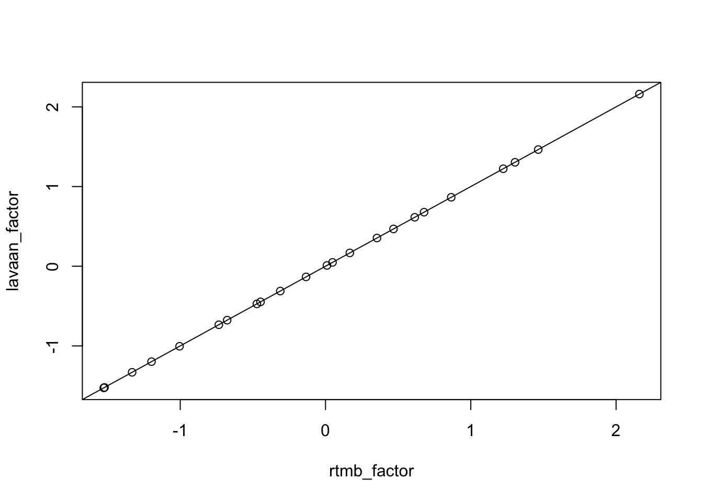

Marine Data Science for All, Regardless of Backbone!
Latent Variables and Confirmatory Factor Analysis in RTMB
R
statistics
RTMB
Keywords
R, RTMB
In previous posts, I mentioned that one reason to use the RTMB package is for more complex models. Latent variables are an excellent case! I use them all the time doing Structural Equation Modeling with lavaan, but often want to be free of the covariance-based approach for reasons of non-linearities and non-normality. Jon Lefcheck’s piecewiseSEM is a great solution, integrating together many modeling frameworks and packages in one place, but, it doesn’t implement latent variables for a variety of reasons. It’s a hard problem! You can deal with it Bayes - even with brms. But, some folk might not want to go all the way to Full Luxury Bayesian Structural Equation Modeling.
RTMB, however, presents a great way forward. And not only does it allow one to do a basic SEM, but with latent variables, you can do things like Integrated Modeling, where you have different data sources with different types of information all of which reflect one underlying phenomenon as used in fisheries modeling.
Let’s build up to an SEM with a nice data set looking at how distance from source site affects cordgrass (Spartina) transplant success that I’ve used for other teaching projects based on data from Travis and Grace 2010.
This is where I want to go, but for the moment, let’s just look at the latent variable side - the CFA - for performance.
So let’s start by loading it up and some libraries -
library(RTMB)
library(dplyr) # to make our lives easier
spartina <- readr::read_csv("https://raw.githubusercontent.com/jebyrnes/semclass/refs/heads/master/files/data/TravisDataForLVExample.csv") |>
mutate(numbstems_s = scale(numbstems),
clonediam_s = scale(clonediam),
numbinfl_s = scale(numbinfl),
meanht_s = scale(meanht),
meanwidth_s = scale(meanwidth),
)A Simple Latent Variable Model
Let’s start by building the CFA portion. We’re going to need to write an objective function that
Has a sigma for each observed variable.
We’ll define a distribution for each observed indicator variable that is a unique slope * our latent variable,
performanceplus a unique intercept. We’ll set that to be normally distribted.As we need to define our latent variable, and make sure this model is identified, we’ll define it as a normally distributed variable with mean of 0 and SD of 1.
lv_fun <- function(p){
getAll(spartina, p)
sigma_clonediam <- exp(log_sigma_clonediam)
sigma_numbstems <- exp(log_sigma_numbstems)
sigma_numbinfl <- exp(log_sigma_numbinfl)
# latent variable indicators
clonediam %~%
dnorm(pc *performance + clonediam_int, sigma_clonediam)
numbstems %~%
dnorm(ps *performance + numbstems_int, sigma_numbstems)
numbinfl %~%
dnorm(pi *performance + numbinfl_int, sigma_numbinfl)
# fixed coefs to make this identified
performance_sigma <- 1
performance_mean <- 0
ADREPORT(performance_sigma); ADREPORT(performance_mean)
performance %~% dnorm(performance_mean, performance_sigma)
}OK, that makes sense from a modeling perspective. It does what we want. Now, how do we setup start values? Well, let’s start with all loadings at 1 and intercepts at the mean of the observed indicator (note, I ran this once setting loadings at 0, but, that’s a special point in the likelihood, and you should never do that - learn from my mistakes). Next, we’ll set the log sigmas as the log of SDs. Again, reasonable start values.
Last - the latent variable parameter. What do we do? Here, we just need to make an empty vector that is the right length. And by empty, I don’t mean nulls or NAs, but rather, we’ll use start values that accord to our mean - in this case 0 - of our LV.
lv_params <- list(
pc = 1,
ps = 1,
pi = 1,
clonediam_int = mean(spartina$clonediam),
numbstems_int = mean(spartina$numbstems),
numbinfl_int = mean(spartina$numbinfl),
log_sigma_clonediam = sd(spartina$clonediam) |> log(),
log_sigma_numbstems = sd(spartina$numbstems)|> log(),
log_sigma_numbinfl = sd(spartina$numbinfl)|> log(),
performance = rep(0, nrow(spartina))
)The final step is pretty simple - we’ll use MakeADFun() as usual. Only now, we need to define performance as a random variable. This lets RTMB know that this is an unobserved latent variable we will be estimating - just like when we did random effects before.
lv_fit <- MakeADFun(lv_fun, lv_params, silent = TRUE,
random = "performance")
lv_opt <- with(lv_fit,
nlminb(par, fn, gr))
lv_opt$message[1] "relative convergence (4)"sdreport(lv_fit)sdreport(.) result
Estimate Std. Error
pc 16.9316555 2.7667769
ps 15.8302699 2.4673571
pi 1.8210469 0.3585978
clonediam_int 27.6005960 3.7019904
numbstems_int 25.0760853 3.3728447
numbinfl_int 2.2119566 0.4456149
log_sigma_clonediam 1.6754413 0.2932943
log_sigma_numbstems 1.2013250 0.5907472
log_sigma_numbinfl 0.1119555 0.1619030
Maximum gradient component: 5.274218e-05 Lovely! It worked, and we have coefficients that, well, nothing seems insane at least.
Did it blend?
To check to ensure this worked as we think it should, we can compare it to the same model fit using covariance-based estimation of SEMs in lavaan. To make sure our model matches, we need to include that we want the meanstructure and also that, rather than the loading of the first indicator set to 1 as is the default, that the variance of the LV is set to 1. For that, we set std_lv = TRUE - we have a standardized latent variable.
library(lavaan)
mod_lavaan <- "
performance =~ clonediam + numbstems + numbinfl
"
fit_lavaan <- sem(mod_lavaan,
data = spartina,
meanstructure = TRUE,
std.lv = TRUE
)OK, nicely done. BUT - do the coefficients match? For that, we can use broom::tidy to get the coefficients from lavaan and then I’ll do some awful substitutions to join those coefficients with the RTMB coefficients from sdreport().
lavcoefs <- broom::tidy(fit_lavaan) |>
select(-op, -statistic, -p.value, -std.lv, -std.all)
rtmb_coefs <- sdreport(lv_fit) |>
summary() |>
as_tibble(rownames = "parameter") |>
filter(parameter != "performance") |>
janitor::clean_names() |>
mutate(
term = case_when(
parameter == "pc" ~ "performance =~ clonediam",
parameter == "ps" ~ "performance =~ numbstems",
parameter == "pi" ~ "performance =~ numbinfl",
parameter == "log_sigma_clonediam" ~ "clonediam ~~ clonediam",
parameter == "log_sigma_numbstems" ~ "numbstems ~~ numbstems",
parameter == "log_sigma_numbinfl" ~ "numbinfl ~~ numbinfl",
parameter == "performance_sigma" ~ "performance ~~ performance",
parameter == "clonediam_int" ~ "clonediam ~1 ",
parameter == "numbstems_int" ~ "numbstems ~1 ",
parameter == "numbinfl_int" ~ "numbinfl ~1 ",
parameter == "performance_mean" ~ "performance ~1 "
)
) |>
rename(rtmb_estimate = estimate,
rtmb_std_error = std_error)
left_join(lavcoefs, rtmb_coefs) |>
select(term, estimate, rtmb_estimate,
std.error, rtmb_std_error)# A tibble: 11 × 5
term estimate rtmb_estimate std.error rtmb_std_error
<chr> <dbl> <dbl> <dbl> <dbl>
1 "performance =~ clonediam" 16.9 16.9 2.77 2.77
2 "performance =~ numbstems" 15.8 15.8 2.47 2.47
3 "performance =~ numbinfl" 1.82 1.82 0.359 0.359
4 "clonediam ~~ clonediam" 28.5 1.68 16.7 0.293
5 "numbstems ~~ numbstems" 11.1 1.20 13.1 0.591
6 "numbinfl ~~ numbinfl" 1.25 0.112 0.405 0.162
7 "performance ~~ performance" 1 1 0 0
8 "clonediam ~1 " 27.6 27.6 3.70 3.70
9 "numbstems ~1 " 25.1 25.1 3.37 3.37
10 "numbinfl ~1 " 2.21 2.21 0.446 0.446
11 "performance ~1 " 0 0 0 0 Well, gross code, but, it worked! And - well looky-there. A fabulous match!
warning: this is a teaching demo - I’m not showing everything! You should also do this and try and set loadings to 1 - although, in terms of scaling latent variables… listen here to see if it don’t make no nevermind.
As a final check, we can compare the predicted values of latent variables from both lavaan and RTMB to see if they match.
# from RTMB
fac_scores <- sdreport(lv_fit) |>
summary() |>
as_tibble(rownames = "parameter") |>
filter(parameter == "performance") |>
janitor::clean_names()
# Make a tibble with the values from lavaan
lv_values <- tibble(
lavaan_factor = lavPredict(fit_lavaan),
rtmb_factor = fac_scores$estimate
)
# plot with a 1:1 line
plot(lavaan_factor ~ rtmb_factor, data = lv_values)
abline(a = 0, b = 1)
Now that is NICE.
What about new observations?
What if we want to get the factor scores for new observations? As we have already looked at factors as a missing variable problem, we should be able to do the same - only now with new observations - as long as we use the loadings from our fit model. We just need to re-write our model, as we did with linear regression, to take in new data. I’m also going to report out the hat values of our indicators for use in prediction.
# label: fun_with_data
lv_fun_forpred <- function(p, data){
getAll(data, p)
sigma_clonediam <- exp(log_sigma_clonediam)
sigma_numbstems <- exp(log_sigma_numbstems)
sigma_numbinfl <- exp(log_sigma_numbinfl)
# latent variable indicators - now with hats
clonediam_hat <- pc *performance + clonediam_int
clonediam %~%
dnorm(clonediam_hat, sigma_clonediam)
numbstems_hat <- ps *performance + numbstems_int
numbstems %~%
dnorm(numbstems_hat, sigma_numbstems)
numbinfl_hat <- pi *performance + numbinfl_int
numbinfl %~%
dnorm(numbinfl_hat, sigma_numbinfl)
ADREPORT(clonediam_hat); ADREPORT(numbstems_hat); ADREPORT(numbinfl_hat)
# fixed coefs to make this identified
performance_sigma <- 1
performance_mean <- 0
ADREPORT(performance_sigma); ADREPORT(performance_mean);
performance %~% dnorm(performance_mean, performance_sigma)
}Then, make an initial fit to with this new model, extracting the parameters and the Hessian. Note, RTMB doesn’t do well with the Hessian with random effects, so we’ll use optimHess() instead (thanks, Claude!)
cmb <- function(f, d) function(p) f(p, d)
# RTMB object
lv_fit_forpred <- cmb(lv_fun_forpred, spartina) |>
MakeADFun(lv_params, random = "performance",
silent = TRUE)
#optimize
lv_opt_forpred <- with(lv_fit_forpred,
nlminb(par, fn, gr))
# parameters and hessian
fit_params <- lv_opt_forpred$par
# Have to use a different method to get the Hessian as RTMB won't run he()
#fit_hessian <- lv_fit_forpred$he() # doesn't work
fit_hessian <- optimHess(fit_params, lv_fit_forpred$fn, lv_fit_forpred$gr)Now, what if we start with a set of values for our latent variable. Can we recover indicators? Yes!
pred_data <- data.frame(performance = c(-1,0,1,2),
clonediam = NA, numbstems = NA, numbinfl = NA)
pred_adfun <- MakeADFun(cmb(lv_fun_forpred, pred_data),
as.list(fit_params),
silent = TRUE)
# let's see it!
pred_inds <- summary(sdreport(pred_adfun,
par.fixed = fit_params,
hessian.fixed = fit_hessian)) |>
as_tibble(rownames = "parameter") |>
filter(parameter %in% c("clonediam_hat", "numbstems_hat", "numbinfl_hat")) |>
janitor::clean_names() |>
#select(-std_error) |>
mutate(parameter = gsub("_hat", "", parameter)) |>
mutate(performance = rep(pred_data$performance, 3)) |>
tidyr::pivot_wider(names_from = "parameter",
values_from = c("estimate", "std_error")) |>
rename_with(~gsub("estimate_", "", .), everything())
pred_inds# A tibble: 4 × 7
performance clonediam numbstems numbinfl std_error_clonediam
<dbl> <dbl> <dbl> <dbl> <dbl>
1 -1 10.7 9.25 0.391 4.62
2 0 27.6 25.1 2.21 3.70
3 1 44.5 40.9 4.03 4.62
4 2 61.5 56.7 5.85 6.66
# ℹ 2 more variables: std_error_numbstems <dbl>, std_error_numbinfl <dbl>OK - so values we can work with. Can we go the other way? We can! But, here’s the funky part. performance is not a value in the data that we feed in. Rather, it’s a parameter that we are estimaing. Let’s see this in action by looking at our parameters.
lv_fit_forpred$env$parList(fit_params)$pc
[1] 16.93166
$ps
[1] 15.83027
$pi
[1] 1.821047
$clonediam_int
[1] 27.6006
$numbstems_int
[1] 25.07609
$numbinfl_int
[1] 2.211957
$log_sigma_clonediam
[1] 1.675441
$log_sigma_numbstems
[1] 1.201325
$log_sigma_numbinfl
[1] 0.1119555
$performance
[1] -0.67696296 0.67816261 1.30447923 -0.47250827 -0.13397593 -1.33131153
[7] 0.04805202 0.61415494 -1.19767322 -0.31161947 1.46422489 0.01011777
[13] -0.73435498 0.46809476 -1.52626706 1.22366568 -1.52120288 -1.00467587
[19] 0.86494119 2.16074542 -0.44747061 0.16716053 0.35422578
attr(,"check.passed")
[1] TRUENote that this is different than where we extracted just the parameters for fit_params before - let’s you see the random effects! And all that goes into your summary of your sdreport.
You can see this more dramatically by running the following, which will fail.
ind_data <- pred_inds |>
select(-performance)
# mutate(performance = 0) # can also try this which does not work
pred_adfun <- MakeADFun(cmb(lv_fun_forpred, ind_data),
fit_params,
random = "performance",
silent = TRUE)I know, I wish it were the other way around, but, so it goes for random - latent - variables. So, we combine it with our fit parameters with a list of performance values for the model to work with. To do that, we take our parameter list from above, and add a list of performance values of 0.
# data
ind_data <- pred_inds |>
select(-performance)
# fit parameters
new_params <- c(fit_params, list(performance = rep(0, nrow(ind_data))))
score_adfun <- MakeADFun(cmb(lv_fun_forpred, ind_data),
new_params,
random = "performance",
silent = TRUE)Nice. Now we can proceed as before and see how this compares to c(-1, 0, 1, 2). Note, we’ll give summary the "random" argument to just pull out the random component.
scores <- sdreport(score_adfun,
par.fixed = fit_params,
hessian.fixed = fit_hessian) |>
summary("random") |>
as_tibble(rownames = "parameter")
scores# A tibble: 4 × 3
parameter Estimate `Std. Error`
<chr> <dbl> <dbl>
1 performance -0.973 0.299
2 performance 0 0.264
3 performance 0.973 0.299
4 performance 1.95 0.384Not bad!!! I’m hoping you are seeing the connection here - that once we have this setup, we can, perhaps, go to full blown SEM and use fit models to make new predictions, counterfactuals, and more. Next time!